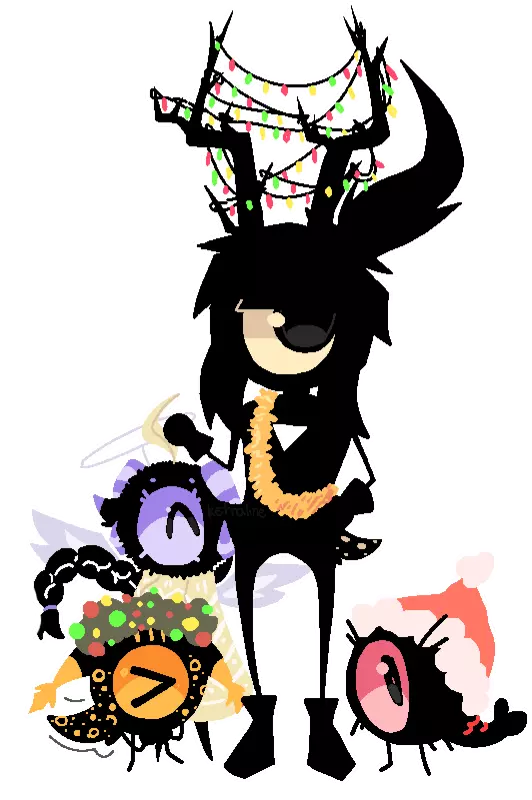

equipment
- ASUS ROG STRIX SCAR III (yes, it sounds like a jet engine)
- Xbox 360 with RGH chip
- Playstation 3/4/5/Vita with HENkaku
- Nintendo Switch/3DS with b9s and Luma
- Valve Index
- Steam Deck
Games I like:
- Rain World
- HI-FI RUSH
- Lobotomy Corporation/Library of Ruina
- Ratchet and Clank
- Valve games
- Arknights
- Splatoon
- Fire Emblem (mostly Three Houses)
- Patapon
- LittleBigPlanet
This is a pretty limited list. You can talk to me about anything game related and I'll probably be interested.

Patapon
Patapon is a combination of the rhythm and RTS genre, in which you control an army of little eyeballs on their search for 'Earthend'. I'm still playing Patapon 3, but I also have Patapon 2.
I have multiple Patapon OC's! Here's a picture of them celebrating Christmas. You can see more of them on
my Toyhouse.

Rain World
Rain World is a survival platform game where you play as a slugcat. You have to use debris as weapons to escape enemies, scavenge for food, and reach safe hibernation rooms before a deadly rain arrives. I love this game with all of my heart! I have a few OCs which you can see here.

Lobotomy Corporation
Lobotomy Corp falls into the management simulator genre. It is inspired by the SCP Foundation, Cabin in the Woods, and Warehouse 13. As the new manager at the company, your task is to watch over beings known as Abnormalities over the course of 50 days.
The game is BRUTAL - it took me 200h to beat it, but at least I did it! I do have some OC's based on it, which you can see on
my Toyhouse.